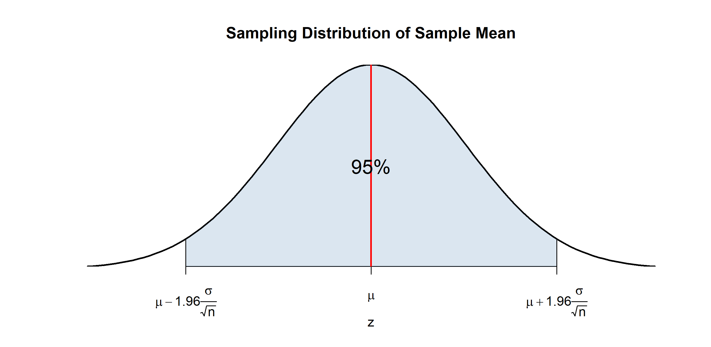
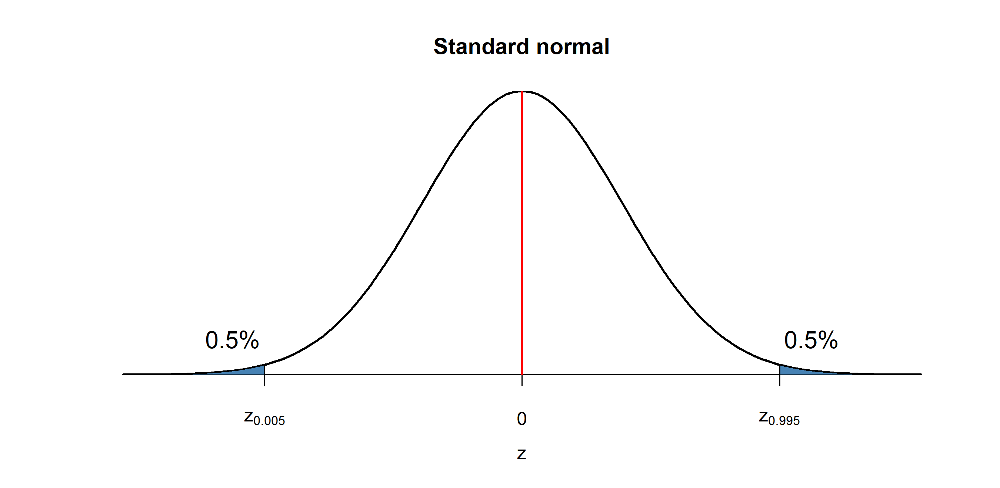
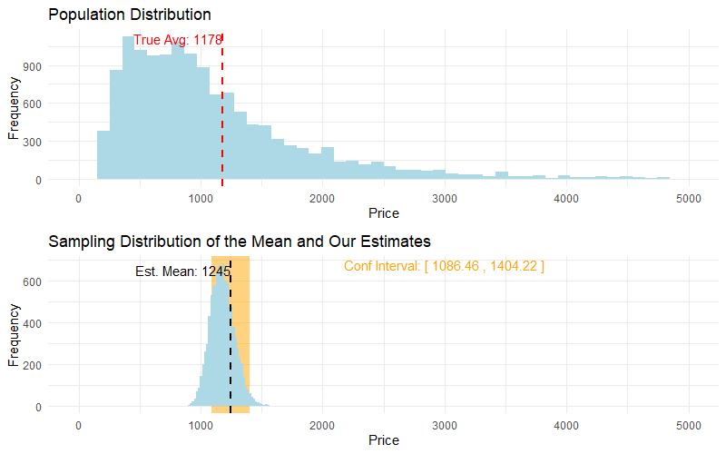
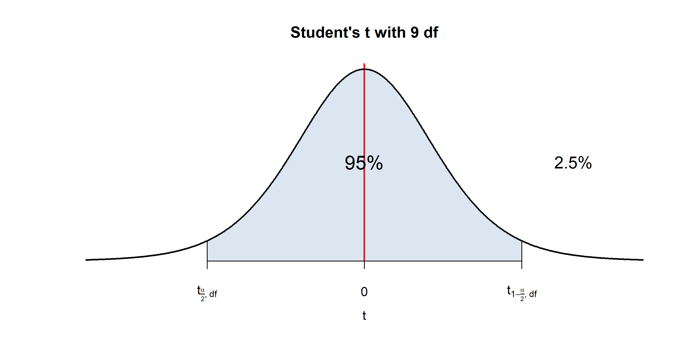
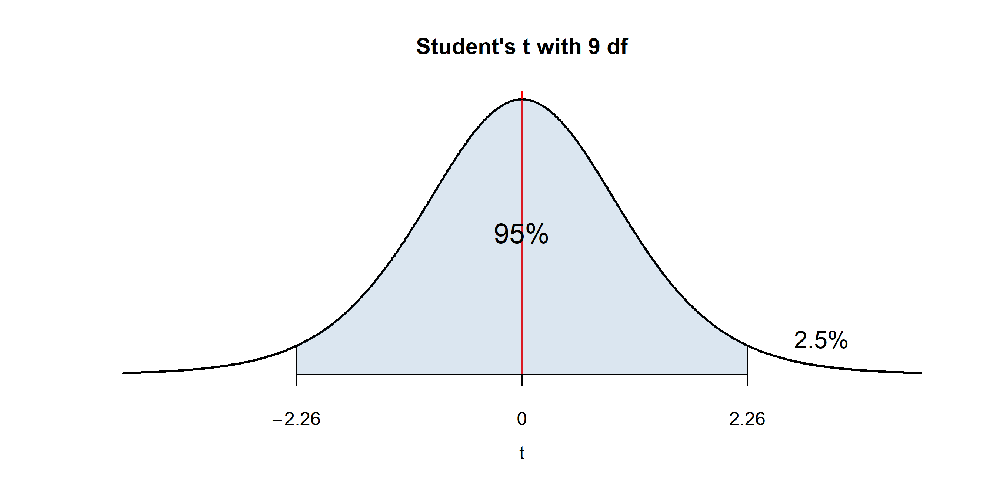
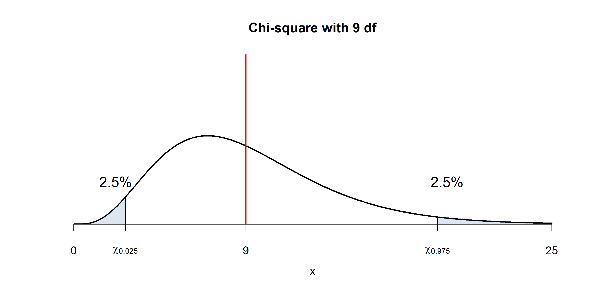
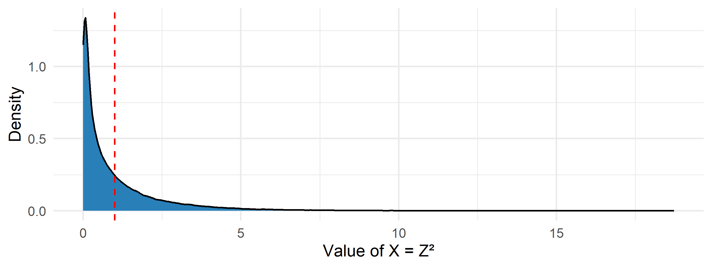
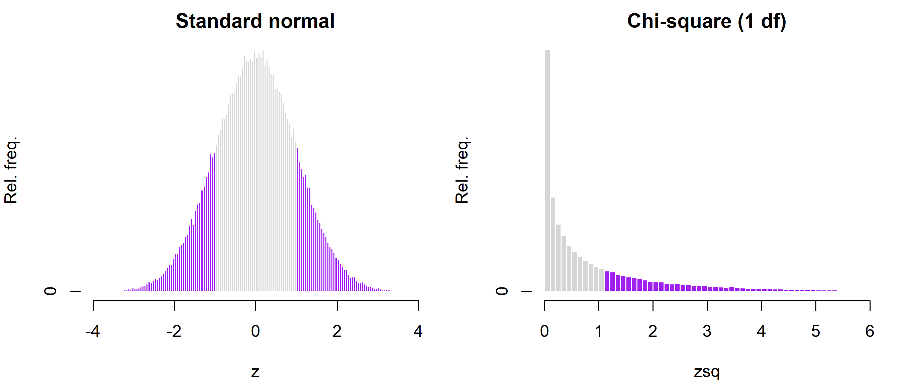

Week 5 — Confidence intervals
Business Forecasting
Where we are
Describing data → Reasoning under uncertainty → Regression → Time series forecasting
Reasoning under uncertainty. A sample mean is a single number. This week we put a range of plausible values around it — a confidence interval.
- This week (W5): confidence intervals — for a mean (normal & Student’s t) and for a variance (chi-square).
Fast & hands-on: every interval we derive, you build in R with qnorm / qt / qchisq — the exercises run right here in the deck, in your browser.
Confidence Intervals
Confidence intervals
We calculated the mean price in our sample
How confident are we that our estimate is close to the true parameter?
A confidence interval measures the uncertainty around the estimate — a range of plausible values for the parameter.
Confidence intervals — a first look
- Mean price in our sample was 1245.43
- Is it reasonable to think the true average price is 1100? What about 2000?
- Suppose we computed the confidence interval to be: \[(\cssId{mt-lo}{1086.64},\; \cssId{mt-hi}{1404.22})\]
Where do these numbers come from?
- The sampling distribution of the sample mean tells us how far a point estimate typically lands from the true mean.
- The confidence interval uses that to say where the true mean plausibly lies.
- lo: The lower endpoint. Not the cheapest listing and not a minimum price — it is the smallest value of the true MEAN price that the data still leave plausible.
- hi: The upper endpoint — the largest plausible value of the true mean. The interval is a statement about the average, never about an individual listing.
The route this week
- From the sample mean to the margin of error — how far a sample mean typically lands from the truth.
- Building the interval — the recipe that turns \(\bar{x}\), \(s\) and \(n\) into two endpoints.
- What moves the width — confidence level, sample size, spread.
- What “95% confident” means — what the 95% is a probability of.
- Small samples: Student’s t — the fix when \(n\) is small and \(\sigma\) is unknown.
Then an appendix (an interval for the variance) and ten exam-style problems.
1 · From the sample mean to the margin of error
How far does a sample mean typically sit from the truth? That distance is the building block of every interval.
Sampling distribution
Q: How likely is it that a sample mean is far from the true mean?
- Recall the sampling distribution: \(\bar{x} \sim \mathcal{N}\!\left(\mu, \frac{\sigma}{\sqrt{n}}\right)\)
- Across repeated samples, 95% of the means land in the shaded region. Why 1.96?

Where 1.96 comes from
\[ \begin{align*} 0.95 &= P(-1.96 < Z < 1.96) = P\left(\cssId{mt-zlow}{z_{\frac{\alpha}{2}}} < \cssId{mt-zstat}{\frac{\bar{X}-\mu}{\sigma/\sqrt{n}}} < \cssId{mt-zcrit}{z_{1-\frac{\alpha}{2}}}\right) \\ &= P\left(\mu + z_{\frac{\alpha}{2}}\cssId{mt-se}{\tfrac{\sigma}{\sqrt{n}}} < \cssId{mt-xbarrand}{\bar{X}} < \mu + z_{1-\frac{\alpha}{2}}\tfrac{\sigma}{\sqrt{n}}\right) \end{align*} \]
- The CLT guarantees \(\frac{\bar{X}-\mu}{\sigma/\sqrt{n}}\) is standard normal.
- What if you don’t know \(\sigma\)? In large samples \(s \rightarrow \sigma\), so \(\frac{\bar{X}-\mu}{s/\sqrt{n}} \rightarrow N(0,1)\).
- You may need a somewhat larger \(n\) so that \(s\) approximates \(\sigma\) well.
- zlow: The lower critical value — the point with alpha/2 of the standard normal below it. For 95% confidence it is −1.96.
- zstat: The sample mean measured in standard errors away from the true mean. This is the piece the CLT says is standard normal, which is why the same 1.96 works for prices, weights or wages alike.
- zcrit: The upper critical value: the point with alpha/2 of the standard normal above it. For 95% confidence alpha is 0.05, so this is 1.96. Raise the confidence level and this number grows.
- se: The standard error: the standard deviation of the sample MEAN, not of the data. It measures how far a typical sample mean lands from the true mean. Because of the square root of n, four times the data halves it.
- xbarrand: The sample mean, still random at this point. This line describes samples you have not drawn yet, not the one number you already computed.
Margin of error
- So 95% of sample means fall within \(1.96\frac{\sigma}{\sqrt{n}}\) of the true mean.
- This half-width is the margin of error: \(\;\text{ME} = z_{1-\frac{\alpha}{2}}\cdot\frac{s}{\sqrt{n}}\).
- Now flip it around. You do not see \(\mu\) — you see one sample mean \(\bar{x}\), and you build the interval \(\bar{x} \pm \text{ME}\) around it.
How far can \(\bar{x}\) drift from \(\mu\) before that interval loses the true mean?
🖊️ Compute the margin of error
A survey of \(n = 100\) Airbnb listings has a standard deviation of \(s = 961.9\) pesos. Compute the 95% margin of error in pesos: the critical value from qnorm(), times the standard error.
The 95% critical value is qnorm(0.975) — the point with 2.5% of the standard normal above it. Multiply it by s / sqrt(n).
Find the flip point
You just computed it: with \(n = 100\) and 95% confidence, \(\text{ME} = 188.5\) pesos. Those numbers are fixed for this page — only \(\bar{x}\) moves.
viewof me_draw = Inputs.toggle({label: "Draw a sample mean", value: false})
viewof me_xbar = Inputs.range([1000, 1500], {value: 1245, step: 1, label: "Sample mean x̄ (pesos)"})
me_conf = 0.95
me_n = 100
me_qnorm = (p) => {
// Beasley-Springer-Moro inverse-normal approximation
const a = [-3.969683028665376e+01, 2.209460984245205e+02, -2.759285104469687e+02,
1.383577518672690e+02, -3.066479806614716e+01, 2.506628277459239e+00];
const b = [-5.447609879822406e+01, 1.615858368580409e+02, -1.556989798598866e+02,
6.680131188771972e+01, -1.328068155288572e+01];
const c = [-7.784894002430293e-03, -3.223964580411365e-01, -2.400758277161838e+00,
-2.549732539343734e+00, 4.374664141464968e+00, 2.938163982698783e+00];
const d = [7.784695709041462e-03, 3.224671290700398e-01, 2.445134137142996e+00,
3.754408661907416e+00];
const pl = 0.02425;
if (p < pl) {
const q = Math.sqrt(-2 * Math.log(p));
return (((((c[0]*q + c[1])*q + c[2])*q + c[3])*q + c[4])*q + c[5]) /
((((d[0]*q + d[1])*q + d[2])*q + d[3])*q + 1);
}
if (p <= 1 - pl) {
const q = p - 0.5, r = q * q;
return (((((a[0]*r + a[1])*r + a[2])*r + a[3])*r + a[4])*r + a[5]) * q /
(((((b[0]*r + b[1])*r + b[2])*r + b[3])*r + b[4])*r + 1);
}
const q = Math.sqrt(-2 * Math.log(1 - p));
return -(((((c[0]*q + c[1])*q + c[2])*q + c[3])*q + c[4])*q + c[5]) /
((((d[0]*q + d[1])*q + d[2])*q + d[3])*q + 1);
}
me_mu = 1245.43
me_sigma = 961.9
me_se = me_sigma / Math.sqrt(me_n)
me_z = me_qnorm(1 - (1 - me_conf) / 2)
me_ME = me_z * me_se
me_covers = Math.abs(me_mu - me_xbar) < me_ME
me_curve = {
const pts = [];
for (let x = 650; x <= 1850; x += 4) {
pts.push({x: x, y: Math.exp(-0.5 * ((x - me_mu) / me_se) ** 2)});
}
return pts;
}
me_col = me_covers ? "#27ae60" : "#e74c3c"
me_plot = Plot.plot({
height: 350,
marginBottom: 35,
x: {domain: [650, 1850], label: "price (pesos)", clamp: true},
y: {domain: [-0.16, 1.22], axis: null},
marks: [
// sampling distribution of x̄, centered at the true mean μ
Plot.areaY(me_curve.filter(p => Math.abs(p.x - me_mu) <= me_ME),
{x: "x", y: "y", fill: "#2980b9", fillOpacity: 0.25}),
Plot.lineY(me_curve, {x: "x", y: "y", stroke: "#333", strokeWidth: 2}),
Plot.text([{x: 660, y: 1.16}], {x: "x", y: "y", textAnchor: "start", fill: "#666", fontSize: 12,
text: () => "curve: sampling distribution of x̄"}),
// shaded band = μ ± ME
Plot.text([{x: me_mu, y: 0.55}], {x: "x", y: "y", fill: "#2980b9", fontSize: 13,
text: () => `95% of sample means land in μ ± ME`}),
Plot.ruleX([me_mu - me_ME, me_mu + me_ME], {y1: -0.03, y2: 0.03, stroke: "#2980b9", strokeWidth: 2}),
Plot.text([{x: me_mu - me_ME, y: -0.10}], {x: "x", y: "y", textAnchor: "end", dx: -4,
fill: "#2980b9", fontSize: 12, text: () => `μ − ME = ${(me_mu - me_ME).toFixed(1)}`}),
Plot.text([{x: me_mu + me_ME, y: -0.10}], {x: "x", y: "y", textAnchor: "start", dx: 4,
fill: "#2980b9", fontSize: 12, text: () => `μ + ME = ${(me_mu + me_ME).toFixed(1)}`}),
// half-width bracket of the band: length ME
Plot.ruleY([0.08], {x1: me_mu, x2: me_mu + me_ME, stroke: "#2980b9", strokeWidth: 2}),
Plot.ruleX([me_mu, me_mu + me_ME], {y1: 0.05, y2: 0.11, stroke: "#2980b9", strokeWidth: 2}),
Plot.text([{x: me_mu + me_ME / 2, y: 0.16}], {x: "x", y: "y", fill: "#2980b9", fontSize: 13,
text: () => "ME"}),
// the true mean μ
Plot.ruleX([me_mu], {stroke: "red", strokeWidth: 2}),
Plot.text([{x: me_mu, y: 1.16}], {x: "x", y: "y", fill: "red", fontSize: 14,
text: () => `μ = ${me_mu} (true mean)`}),
Plot.ruleY([0]),
// your confidence interval x̄ ± ME — drawn once a sample is toggled on
...(me_draw ? [
Plot.ruleY([0.35], {x1: Math.max(650, me_xbar - me_ME), x2: Math.min(1850, me_xbar + me_ME),
stroke: me_col, strokeWidth: 4}),
Plot.ruleX([Math.max(650, me_xbar - me_ME), Math.min(1850, me_xbar + me_ME)],
{y1: 0.31, y2: 0.39, stroke: me_col, strokeWidth: 2}),
Plot.text([{x: Math.max(650, me_xbar - me_ME), y: 0.46}], {x: "x", y: "y", textAnchor: "end", dx: -4,
fill: me_col, fontSize: 12, text: () => `x̄ − ME = ${(me_xbar - me_ME).toFixed(1)}`}),
Plot.text([{x: Math.min(1850, me_xbar + me_ME), y: 0.46}], {x: "x", y: "y", textAnchor: "start", dx: 4,
fill: me_col, fontSize: 12, text: () => `x̄ + ME = ${(me_xbar + me_ME).toFixed(1)}`}),
// half-width bracket of the interval: the same length ME
Plot.ruleY([0.26], {x1: me_xbar, x2: me_xbar + me_ME, stroke: me_col, strokeWidth: 2}),
Plot.ruleX([me_xbar, me_xbar + me_ME], {y1: 0.23, y2: 0.29, stroke: me_col, strokeWidth: 2}),
Plot.text([{x: me_xbar + me_ME / 2, y: 0.18}], {x: "x", y: "y", fill: me_col, fontSize: 13,
text: () => "ME"}),
Plot.dot([{x: me_xbar, y: 0.35}], {x: "x", y: "y", r: 6, fill: me_col}),
Plot.text([{x: me_xbar, y: 0.46}], {x: "x", y: "y", fill: me_col, fontSize: 13,
text: () => `x̄ = ${me_xbar}`})
] : [])
]
})
me_draw
? html`<p style="font-size:0.85em; margin-top:0.2em;">
SE = σ/√n = <b>${me_se.toFixed(1)}</b> pesos, ME = 1.96 · SE = <b>±${me_ME.toFixed(1)}</b> pesos —
the interval x̄ ± ME <b style="color:${me_covers ? "#27ae60" : "#e74c3c"}">
${me_covers ? "covers" : "misses"}</b> μ
(|μ − x̄| = ${Math.abs(me_mu - me_xbar).toFixed(1)} pesos).</p>`
: html`<p style="font-size:0.85em; margin-top:0.2em;">
SE = σ/√n = <b>${me_se.toFixed(1)}</b> pesos, ME = 1.96 · SE = <b>±${me_ME.toFixed(1)}</b> pesos.</p>`- Before touching anything: if \(\bar{x}\) lands exactly on the edge of the shaded band — does the interval \(\bar{x} \pm \text{ME}\) cover \(\mu\), or miss it?
- Turn on Draw a sample mean. Drag \(\bar{x}\) slowly to the right. Write down the price where the segment first turns red.
- Compare that price with the number at the right edge of the shaded band. Now drag left and check the other side.
What you just found
The flip happens exactly at the edge of the band:
\[\cssId{mt-coverdist}{|\mu - \bar{x}| < \text{ME}} \;\iff\; \cssId{mt-inband}{\bar{x} \in (\mu - \text{ME},\, \mu + \text{ME})} \;\iff\; \cssId{mt-mucov}{\mu \in (\bar{x} - \text{ME},\, \bar{x} + \text{ME})}\]
- coverdist: The distance between the true mean and your sample mean is less than one margin of error.
- inband: Your sample mean landed inside the shaded band around the true mean — the region that catches 95% of sample means.
- mucov: The same fact read the other way round: the interval you built around x-bar contains the true mean. Covering and being covered are one event.
- The interval around \(\bar{x}\) covers \(\mu\) exactly when \(\bar{x}\) lands inside the band around \(\mu\) — the two brackets have the same length, ME.
- And \(\bar{x}\) lands inside that band in 95% of samples.
- So the recipe “\(\bar{x} \pm \text{ME}\)” catches the true mean in 95% of all the samples you could have drawn.
Watch the same story animated: Seeing Theory — confidence intervals.
Does that mean “there is a 95% chance that \(\mu\) is in my interval”? Careful — that question gets its own section (4).
The intuition so far
\[\cssId{mt-me}{\text{ME}} = \cssId{mt-zcrit}{z_{1-\frac{\alpha}{2}}}\cdot\frac{\cssId{mt-s}{s}}{\cssId{mt-sqrtn}{\sqrt{n}}}\]
- \(s/\sqrt{n}\) is the typical miss: how far a sample mean usually sits from the true mean.
- Multiplying by \(z = 1.96\) stretches it to an almost-worst-case miss: only 5% of samples land farther out.
- So an interval of \(\pm\text{ME}\) around \(\bar{x}\) reaches back to \(\mu\) — unless your sample was one of the unlucky 5%.
- Precision is bought with data, at a \(\sqrt{n}\) rate: 4× the sample halves ME — to halve it again, you need 16×.
- me: The margin of error — half the width of the interval. The interval itself is the sample mean plus and minus this number.
- zcrit: The upper critical value: the point with alpha/2 of the standard normal above it. For 95% confidence alpha is 0.05, so this is 1.96. Raise the confidence level and this number grows.
- s: The sample standard deviation — how much the individual observations vary. Noisier data give a wider interval, and nothing about the sample size can change that.
- sqrtn: The square root of the sample size, not n itself. Averaging cancels errors only partly, so four times the data halves the margin of error rather than quartering it.
2 · Building the interval
The recipe: point estimate, spread, critical value — then \(\bar{x} \pm \text{ME}\).
Calculation procedure
Use this when \(n > 40\):
- Take an IID sample.
- Compute the mean \(\bar{x}\) and standard deviation \(s\).
- Standard error = SD of the estimator: \(\small SE = \frac{s}{\sqrt{n}}\).
- Pick a confidence level \(1-\alpha\) (usually 90 / 95 / 99%).
- \(\alpha\) = probability of a Type 1 error. Example: 95% → \(\alpha = 0.05\).
- Find critical values \(\small z_{\frac{\alpha}{2}},\, z_{1-\frac{\alpha}{2}}\) with \(\small P(z_{\frac{\alpha}{2}} < Z < z_{1-\frac{\alpha}{2}}) = 1-\alpha\).
- Example: 95% → \(\small z_{0.975} = 1.96\).
- Build the interval: \(\small \left(\bar{x} - z_{1-\frac{\alpha}{2}}\cdot\frac{s}{\sqrt{n}},\;\; \bar{x} + z_{1-\frac{\alpha}{2}}\cdot\frac{s}{\sqrt{n}}\right)\)
Finding critical values
- Suppose the confidence level is 99%, so \(\alpha = 0.01\).
- We need \(z_{1-\frac{\alpha}{2}}\) with \(P(z_{\frac{\alpha}{2}} < Z < z_{1-\frac{\alpha}{2}}) = 0.99\).
- Equivalently \(z_{0.995}\) is the 99.5% quantile of the standard normal → \(z_{0.995} = 2.58\).

🖊️ Exercise 1 — Build the 95% interval
You now have all five steps. Sample_list holds 200 sampled Airbnb listings: Sample_list$price is the nightly price, and Sample_list$clean is TRUE for the 100 listings with a cleanliness score above 4.5. Build the 95% confidence interval for the mean price of the clean listings, and print both endpoints.
p <- Sample_list$price[Sample_list$clean == TRUE] picks out the clean listings. qnorm(0.975) is the critical value, and the c(-1, 1) trick returns both endpoints at once: mean(p) + c(-1, 1) * <crit> * <se>.
Constructing a CI: worked example
90% CI for the average price of listings with cleanliness score > 4.5:
- IID sample, \(n = 100\) \(\checkmark\)
- \(\bar{x} =\) 1245.43 and \(s =\) 961.9
- Confidence level 90% → \(\alpha = 0.1\)
- Critical value: \(z_{0.95} = 1.65\)
- Interval: \[\small \left(\cssId{mt-centre}{1245.43} - \cssId{mt-z165}{1.65}\cdot\cssId{mt-se}{\tfrac{961.9}{\sqrt{100}}},\;\; 1245.43 + 1.65\cdot\tfrac{961.9}{\sqrt{100}}\right) = (1086.64,\, 1404.22)\]
- centre: The point estimate. The interval is built around the sample mean, so it always sits exactly in the middle — the data decide the width, never the position relative to the estimate.
- z165: The 90% critical value. A lower confidence level means a smaller multiplier and a narrower interval: 95% would use 1.96 and 99% would use 2.58.
- se: The standard error: the standard deviation of the sample MEAN, not of the data. It measures how far a typical sample mean lands from the true mean. Because of the square root of n, four times the data halves it.
3 · What moves the width
Three dials set how wide the interval comes out. Which ones, and by how much?
Predict before you compute
You are about to rebuild the same interval at 90%, 95% and 99% confidence.
Guess first: how much wider is the 99% interval than the 95% one?
- Roughly the same? 30% wider? Twice as wide?
Commit to a number, then compute it.
🖊️ Exercise 2 — Change the confidence level
Rebuild the interval for the mean price at 90%, 95% and 99%. Report the three widths, and the ratio of the 99% width to the 95% width.
Confidence level \(1-\alpha\) uses the \(1-\alpha/2\) quantile: 90% → qnorm(0.95), 95% → qnorm(0.975), 99% → qnorm(0.995). diff(ci) gives the width.
n <- length(x)
se <- sd(x) / sqrt(n)
ci90 <- mean(x) + c(-1, 1) * qnorm(0.95) * se # 957.34 1156.79
ci95 <- mean(x) + c(-1, 1) * qnorm(0.975) * se # 938.24 1175.89
ci99 <- mean(x) + c(-1, 1) * qnorm(0.995) * se # 900.90 1213.23
c(w90 = diff(ci90), w95 = diff(ci95), w99 = diff(ci99)) # 199.4 237.6 312.3
diff(ci99) / diff(ci95) # 1.31The price of confidence
Going 95% → 99% costs about 31% extra width — the critical value goes from 1.96 to 2.58 and everything else stays fixed.
- Higher confidence buys a safer statement about a vaguer range.
- A 100% interval is \((-\infty, \infty)\): always right, never useful.
- Which level you choose is a business decision about the cost of being wrong, not a statistical one.
🖊️ Exercise 3 — What does the width actually depend on?
The formula has three inputs you could change: the critical value, \(n\), and \(s\). Hold the confidence level at 95% and find out how the width responds to the other two.
Width \(= 2 \times z \times s/\sqrt{n}\), and R recycles: sd(x)/sqrt(ns) returns one value per element of ns. plot(ns, w, type = "b") draws the curve.
ns <- c(10, 25, 50, 100, 400, 1000)
w <- 2 * qnorm(0.975) * sd(x) / sqrt(ns)
cbind(n = ns, width = round(w, 1))
# n width
# 10 1062.8
# 25 672.2
# 50 475.3
# 100 336.1
# 400 168.0
# 1000 106.3
plot(ns, w, type = "b", pch = 16, col = "steelblue",
xlab = "sample size n", ylab = "width of the 95% CI")
# Doubling the spread doubles the width; n is unchanged.
n <- length(x)
2 * qnorm(0.975) * sd(x) / sqrt(n) # 237.6
2 * qnorm(0.975) * 2 * sd(x) / sqrt(n) # 475.3Shape of confidence intervals
\(CI = \left(\bar{x} \pm z_{1-\frac{\alpha}{2}}\cdot\frac{s}{\sqrt{n}}\right)\) is wider when:
- the confidence level is higher (99% is wider than 90%);
- the sample size \(n\) is smaller;
- the standard deviation \(\sigma\) is larger.
Note the asymmetry you just plotted: \(s\) enters linearly (double the spread, double the width) but \(n\) enters through \(\sqrt{n}\) (quadruple the data, halve the width).
The three dials, live
The same picture as before, now with all three dials unlocked. The sample mean is stuck at \(\bar{x} = 1150\).
viewof d3_conf = Inputs.range([0.80, 0.99], {value: 0.95, step: 0.01, label: "Confidence level"})
viewof d3_n = Inputs.range([25, 800], {value: 100, step: 25, label: "Sample size n"})
viewof d3_sigma = Inputs.range([400, 1600], {value: 960, step: 40, label: "Population sd σ (pesos)"})
d3_xbar = 1150
d3_se = d3_sigma / Math.sqrt(d3_n)
d3_z = me_qnorm(1 - (1 - d3_conf) / 2)
d3_ME = d3_z * d3_se
d3_covers = Math.abs(me_mu - d3_xbar) < d3_ME
d3_col = d3_covers ? "#27ae60" : "#e74c3c"
d3_curve = {
const pts = [];
for (let x = 250; x <= 2150; x += 6) {
pts.push({x: x, y: Math.exp(-0.5 * ((x - me_mu) / d3_se) ** 2)});
}
return pts;
}
d3_plot = Plot.plot({
height: 330,
marginBottom: 35,
x: {domain: [250, 2150], label: "price (pesos)", clamp: true},
y: {domain: [-0.16, 1.22], axis: null},
marks: [
Plot.areaY(d3_curve.filter(p => Math.abs(p.x - me_mu) <= d3_ME),
{x: "x", y: "y", fill: "#2980b9", fillOpacity: 0.25}),
Plot.lineY(d3_curve, {x: "x", y: "y", stroke: "#333", strokeWidth: 2}),
Plot.text([{x: 260, y: 1.16}], {x: "x", y: "y", textAnchor: "start", fill: "#666", fontSize: 12,
text: () => "curve: sampling distribution of x̄"}),
Plot.text([{x: me_mu, y: 0.55}], {x: "x", y: "y", fill: "#2980b9", fontSize: 13,
text: () => `${Math.round(d3_conf * 100)}% of sample means land in μ ± ME`}),
Plot.ruleX([me_mu], {stroke: "red", strokeWidth: 2}),
Plot.text([{x: me_mu, y: 1.16}], {x: "x", y: "y", fill: "red", fontSize: 14,
text: () => `μ = ${me_mu}`}),
Plot.ruleY([0]),
Plot.ruleY([0.35], {x1: Math.max(250, d3_xbar - d3_ME), x2: Math.min(2150, d3_xbar + d3_ME),
stroke: d3_col, strokeWidth: 4}),
Plot.ruleX([Math.max(250, d3_xbar - d3_ME), Math.min(2150, d3_xbar + d3_ME)],
{y1: 0.31, y2: 0.39, stroke: d3_col, strokeWidth: 2}),
Plot.text([{x: Math.max(250, d3_xbar - d3_ME), y: 0.46}], {x: "x", y: "y", textAnchor: "end", dx: -4,
fill: d3_col, fontSize: 12, text: () => `x̄ − ME = ${(d3_xbar - d3_ME).toFixed(1)}`}),
Plot.text([{x: Math.min(2150, d3_xbar + d3_ME), y: 0.46}], {x: "x", y: "y", textAnchor: "start", dx: 4,
fill: d3_col, fontSize: 12, text: () => `x̄ + ME = ${(d3_xbar + d3_ME).toFixed(1)}`}),
Plot.dot([{x: d3_xbar, y: 0.35}], {x: "x", y: "y", r: 6, fill: d3_col}),
Plot.text([{x: d3_xbar, y: 0.24}], {x: "x", y: "y", fill: d3_col, fontSize: 13,
text: () => `x̄ = ${d3_xbar}`})
]
})
html`<p style="font-size:0.85em; margin-top:0.2em;">
z = <b>${d3_z.toFixed(2)}</b>, SE = σ/√n = <b>${d3_se.toFixed(1)}</b> pesos,
ME = z · SE = <b>±${d3_ME.toFixed(1)}</b> pesos,
<b>width = 2 · ME = ${(2 * d3_ME).toFixed(1)} pesos</b> —
the interval <b style="color:${d3_col}">${d3_covers ? "covers" : "misses"}</b> μ.</p>`- Double \(n\) from 100 to 200, then to 400. How does the width of the interval respond each time?
- Reset \(n = 100\). Push the confidence level from 0.80 up to 0.99. What does the extra confidence cost?
- Drag \(\sigma\) up: more spread in prices means wider intervals — at every \(n\).
- At 95%, keep raising \(n\). The interval narrows — and at some point it turns red. Keep that picture in mind for section 4.
4 · What “95% confident” means
You can build an interval. But what exactly is the 95% a probability of?
What does “95% confidence” mean?
You built one interval from one sample. The “95%” is not about that interval — it is about the procedure that produced it.
There is exactly one way to see this: build the interval many times, from a population whose true mean you already know, and count.
🖊️ Exercise 4 — Build 100 intervals and count
Invent a population with a known mean: \(\mu = 1000\), \(\sigma = 850\). Draw 100 samples of \(n = 30\) from it, build a 95% interval from each, and count how many of the 100 intervals actually contain 1000. Then plot them.
Inside the loop it is the same three lines as Exercise 1, on samp instead of x: e <- sd(samp)/sqrt(n), ci <- mean(samp) + c(-1, 1) * qt(0.975, n - 1) * e, then lo[i] <- ci[1]; hi[i] <- ci[2]. An interval contains mu_true when lo < mu_true & hi > mu_true — that comparison is vectorised, so it gives you all 100 answers at once.
set.seed(1)
mu_true <- 1000; sigma <- 850; n <- 30
lo <- numeric(100); hi <- numeric(100)
for (i in 1:100) {
samp <- rnorm(n, mean = mu_true, sd = sigma)
e <- sd(samp) / sqrt(n)
ci <- mean(samp) + c(-1, 1) * qt(0.975, n - 1) * e
lo[i] <- ci[1]
hi[i] <- ci[2]
}
covers <- lo < mu_true & hi > mu_true
sum(covers) # 95 of the 100 intervals contain the true mean
plot(range(c(lo, hi)), c(1, 100), type = "n",
xlab = "price", ylab = "sample", main = "100 intervals, one true mean")
segments(lo, 1:100, hi, 1:100, col = ifelse(covers, "grey60", "red"), lwd = 2)
abline(v = mu_true, col = "blue", lwd = 2)
# Each interval is either right or wrong -- there is no "95%" about any single one.
# The 95% is the share of intervals the PROCEDURE gets right in the long run.
# Rerun with a different seed: the count moves around 95, never lands on the
# same intervals, and the true mean never moves.95% coverage across repeated samples
- Draw many samples, compute \(\bar{x}\) and its interval for each.
- 95% of those intervals cover the true mean. That is what “95% confidence” means.
- The red intervals in your plot are not mistakes in the arithmetic — they are the 5% the method is designed to miss.
Source: Seeing Theory
🖊️ Exercise 5 — Say it correctly
Your 95% CI for the mean price is \(\{980,\; 1130\}\). Which statement is the correct interpretation?
- We are 95% confident the procedure produced an interval that contains the true mean price.
- There is a 95% probability that the true mean price lies between 980 and 1130.
- 95% of listing prices fall between 980 and 1130.
- If we resampled, the new sample mean would be in this interval 95% of the time.
(a) is correct.
(b) is the one almost everyone picks. In your simulation, once an interval was drawn it was either grey or red — nothing probabilistic left about it. (c) confuses the spread of prices with the spread of the mean: sd(x) = 857 vs se = 61. (d) describes a prediction interval for a future \(\bar{x}\), not a statement about \(\mu\).
Interpreting a confidence interval
\[\small \cssId{mt-ci90}{CI_{90}} = (\cssId{mt-lo}{1086.64},\; \cssId{mt-hi}{1404.22})\]
- ci90: A 90% confidence interval. The 90% describes the recipe — used over and over on fresh samples, it captures the true mean 90% of the time. It is not a property of this one interval.
- lo: The lower endpoint. Not the cheapest listing and not a minimum price — it is the smallest value of the true MEAN price that the data still leave plausible.
- hi: The upper endpoint — the largest plausible value of the true mean. The interval is a statement about the average, never about an individual listing.
- Correct: we are 90% confident the interval captures the true mean — i.e. that the true mean price is between 1086.64 and 1404.22.
- Incorrect: “with 90% probability the true mean is in this interval.”
- The computed interval is fixed and the true mean is fixed — no randomness left to attach a probability to.
- The interval is random only before we draw the sample. After computing, the true mean is either in it or not.
The true Airbnb mean

5 · Small samples: Student’s t
With few observations and \(\sigma\) unknown, 1.96 stops being the right multiplier.
When do we use normal critical values?
1. \(X\) is not normal:
- \(n > 30\) — use the normal (use \(n > 40\) if \(\sigma\) unknown, so \(s\) approximates \(\sigma\)).
- \(n < 30\) — normal approximation is unreliable; you need specialized methods (e.g. bootstrap).
2. \(X\) is normal:
- Know \(\sigma\) → use the normal, any \(n\) (with \(\sigma\), \(\frac{\bar{X}-\mu}{\sigma/\sqrt{n}} \sim N(0,1)\)).
- Don’t know \(\sigma\) but \(n > 40\) → normal (CLT kicks in).
- Don’t know \(\sigma\) and \(n < 40\) → use Student’s t (\(s\) is a poor estimate of \(\sigma\) at low \(n\)).
What’s Student’s t?
If \(X_1, \dots, X_n\) are i.i.d. from \(N(\mu, \sigma)\), then
\[\cssId{mt-T}{T} = \frac{\cssId{mt-dev}{\bar{X} - \mu}}{\cssId{mt-ses}{s/\sqrt{n}}}\]
with \(s\) the sample standard deviation, follows a Student’s t distribution with \(n-1\) degrees of freedom:
\[T \sim \cssId{mt-tdist}{t}_{\cssId{mt-df}{n-1}}\]
- T: Exactly the same shape as the z statistic, but with the sample s in place of the unknown sigma. Because s is itself a guess, T bounces around more than a standard normal.
- dev: How far the sample mean landed from the true mean — the error you would like to measure but never can, since the true mean is unknown.
- ses: The estimated standard error: the standard error with the unknown sigma replaced by the sample standard deviation s. Having to estimate it is the entire reason t exists instead of z.
- tdist: Student’s t distribution — bell-shaped and symmetric like the normal, but with heavier tails, because s adds a second source of uncertainty on top of the sample mean.
- df: Degrees of freedom, n − 1 and not n. One degree is spent computing the sample mean before s can be worked out, so only n − 1 deviations are free to vary. More data means more degrees of freedom and a t that looks ever more normal.
Student’s t vs the normal
- Bell-shaped and symmetric around 0.
- Heavier tails than the normal — more uncertainty, because we don’t know \(\sigma\).
- Shape set by the degrees of freedom: as \(n\) grows, \(t_{n-1} \rightarrow N(0,1)\) (CLT again).
Student’s t critical values
- Get the degrees of freedom: \(n - 1\).
- Get the confidence level \(1-\alpha\), hence \(\alpha/2\).
- Find \(t_{1-\frac{\alpha}{2},\,n-1}\) with \(P(T < t_{1-\frac{\alpha}{2},n-1}) = 1-\frac{\alpha}{2}\).

In R: qt(0.975, 9) for a 95% CI with 9 df.
t critical value: example
- \(n = 10 \rightarrow df = 9\); confidence level 95% → \(\frac{\alpha}{2} = 0.025\).
- \(t_{0.975,9} = 2.26\), then build the CI as before:
\[\small \left(\cssId{mt-centre}{\bar{x}} - \cssId{mt-tcrit}{t_{1-\frac{\alpha}{2},n-1}}\cdot\cssId{mt-se}{\frac{s}{\sqrt{n}}},\;\; \bar{x} + t_{1-\frac{\alpha}{2},n-1}\cdot\frac{s}{\sqrt{n}}\right)\]
- centre: The point estimate. The interval is built around the sample mean, so it always sits exactly in the middle — the data decide the width, never the position relative to the estimate.
- tcrit: The t critical value. Two things feed into it: the confidence level, through alpha/2, and the sample size, through the n − 1 degrees of freedom. It is always larger than the matching z, which is why the t interval is wider.
- se: The standard error: the standard deviation of the sample MEAN, not of the data. It measures how far a typical sample mean lands from the true mean. Because of the square root of n, four times the data halves it.

The rule says \(n < 40\). Where does that come from?
Using qnorm when you should have used qt makes your interval too narrow.
At what sample size does the mistake stop mattering? Pick a number before you find out.
🖊️ Exercise 6 — Find the crossover
Compute both 95% critical values — qt(0.975, n - 1) and qnorm(0.975) — for a range of sample sizes, and report how far apart they are in percent. Find the smallest n in your grid where the gap drops below 5%, and below 1%.
qt(0.975, ns - 1) is vectorised over ns. The percentage gap is 100 * (tcrit / qnorm(0.975) - 1). cbind() puts the columns side by side.
ns <- c(2, 5, 10, 20, 30, 40, 50, 100, 500, 1000)
tcrit <- qt(0.975, df = ns - 1)
z <- qnorm(0.975)
cbind(n = ns, t = round(tcrit, 3), z = round(z, 3),
pct_wider = round(100 * (tcrit / z - 1), 1))
# n t z pct_wider
# 2 12.706 1.96 548.3
# 5 2.776 1.96 41.7
# 10 2.262 1.96 15.4
# 20 2.093 1.96 6.8
# 30 2.045 1.96 4.4
# 40 2.023 1.96 3.2
# 50 2.010 1.96 2.5
# 100 1.984 1.96 1.2
# 1000 1.962 1.96 0.1
plot(ns, tcrit, type = "b", pch = 16, log = "x", col = "steelblue",
xlab = "n (log scale)", ylab = "95% critical value")
abline(h = z, col = "red", lwd = 2)Where the crossover lands
- Below \(n \approx 20\) the difference is large and t is not optional.
- By \(n = 30\) the t value is ~4% above z; by \(n = 40\), ~3%; by \(n = 100\), ~1%.
- That is the whole justification for the \(n > 40\) rule of thumb — nothing deeper.
But: using qt is never wrong. It converges to qnorm by itself. When \(\sigma\) is unknown, defaulting to t costs you nothing.
🖊️ Exercise 7 — A small sample
Take only the first 12 prices, xs <- x[1:12], and build a 95% interval for the mean. Build it twice — once with qnorm, once with qt — and report both widths.
ns <- length(xs), ses <- sd(xs)/sqrt(ns), degrees of freedom ns - 1.
xs <- x[1:12]
ns <- length(xs)
ses <- sd(xs) / sqrt(ns)
ci_t <- mean(xs) + c(-1, 1) * qt(0.975, df = ns - 1) * ses # correct here
ci_z <- mean(xs) + c(-1, 1) * qnorm(0.975) * ses # too narrow
ci_t # 421.1 1881.6
ci_z
c(width_t = diff(ci_t), width_z = diff(ci_z))
diff(ci_t) / diff(ci_z) # 1.12: the normal interval understates uncertainty by 12%
# n = 12 with sigma unknown -> Student's t, and the sample must be
# plausibly normal for the t interval to be valid at all.🖊️ Exercise 8 — Did free shipping change spending?
Free shipping was offered to a random group of customers. Spend per customer (\(n=10\)):
\(157.80,\ 192.45,\ 210.20,\ 175.60,\ 198.30,\ 180.90,\ 205.75,\ 185.20,\ 177.40,\ 195.60\)
- Compute the 90% CI. Which critical value, and what must you assume?
- Average spending without free shipping is $182. Can you conclude free shipping changed spending?
\(n = 10\), \(\sigma\) unknown → Student’s t with df = 9. A 90% interval uses the 0.95 quantile: qt(0.95, 9). For (b), just check whether 182 falls between the endpoints.
spend <- c(157.80, 192.45, 210.20, 175.60, 198.30,
180.90, 205.75, 185.20, 177.40, 195.60)
n <- length(spend) # 10, df = 9
se <- sd(spend) / sqrt(n) # xbar = 187.92, s = 15.73, SE = 4.98
ci90 <- mean(spend) + c(-1, 1) * qt(0.95, df = n - 1) * se
ci90 # 178.80 197.04
# (a) Small n and unknown sigma -> Student's t. Assumption: the spends are an
# IID sample from a roughly NORMAL distribution.
# (b) 182 lies inside (178.80, 197.04):
182 > ci90[1] && 182 < ci90[2] # TRUE
# 182 is a plausible value for the true mean, so this sample does NOT
# establish that free shipping changed spending. Note what that is not:
# it is not evidence that the effect is zero -- the interval is 18 dollars
# wide, so effects of several dollars in either direction remain plausible.🖊️ Exercise 9 — The shortcut, and its default
t.test() prints a confidence interval. Get the 95% interval for x out of it, then find out what t.test() does when you ask for a different confidence level, and check its answer against your Exercise 2 result.
t.test(x)$conf.int returns just the endpoints. The argument that changes the level is conf.level =. Note t.test always uses the t critical value.
t.test(x) # default conf.level = 0.95
t.test(x)$conf.int # 937.51 1176.62
t.test(x, conf.level = 0.99)$conf.int # 899.39 1214.74
# Your Exercise 2 interval used qnorm:
n <- length(x); se <- sd(x)/sqrt(n)
mean(x) + c(-1, 1) * qnorm(0.995) * se # 900.90 1213.23
# Slightly narrower than t.test's, because t.test uses qt(0.995, 199) = 2.601
# rather than qnorm(0.995) = 2.576. At n = 200 the difference is ~1%.🖊️ Exercise 10 — The whole week, one question
You are the analyst for a host with listings in this market. The city tourism board has published a report stating that
“the average nightly price in this market is 900 pesos.”
Your sample is x. Answer with the tools of this week: a number, a picture, and one sentence.
hist(x, breaks = 30) for the data, abline(v = ..., col = ..., lty = ...) for the interval endpoints and for 900. The verdict is about whether 900 falls inside the interval.
n <- length(x) # 200 -> large sample, sigma unknown; z or t, both fine
se <- sd(x) / sqrt(n)
ci <- mean(x) + c(-1, 1) * qnorm(0.975) * se
mean(x) # 1057.07
ci # 938.24 1175.89
hist(x, breaks = 30, col = "grey85", border = "white",
main = "Nightly prices, with the 95% CI for the mean", xlab = "price (MXN)")
abline(v = ci, col = "red", lwd = 2, lty = 2)
abline(v = mean(x), col = "red", lwd = 2)
abline(v = 900, col = "blue", lwd = 3)
900 > ci[1] && 900 < ci[2] # FALSE900 lies below the whole interval, so the sample does not support the board’s figure: the plausible range for the true average is roughly 940 to 1180 pesos.
Two things worth saying out loud to the host. The interval is about the average listing, not about any single one — individual prices in the histogram run from under 300 to several thousand, and sd(x) = 857 dwarfs se = 61. And the interval only covers sampling error; if these 200 listings were not drawn at random from the market, no width of interval fixes that.
Exam question — Fall 2025 Midterm 1
Real questions from last year’s Midterm 1 — Households & Environment Survey (\(n = 14{,}505\) households, each surveyed once, 2017). We solve these together in class using households_environment.rda (object exam_data), in your Week 5 folder.
Q7. A transportation agency wants to estimate average weekly household gasoline spending (\(n = 14{,}505\)). Construct a 90% confidence interval for the mean and report the lower bound.
Q8. What happens to the interval if you change the confidence level to 99%? (no calculation)
Large \(n\) → use the normal critical value. Higher confidence → wider interval, so a lower lower bound.
Practice now (this week’s pack): the CI-construction and confidence-level problems in the Week 5 set, then re-run Q7 on exam_data.
What you must be able to do this week
- Construct a confidence interval for a mean — compute \(\bar{x}\), \(s\), the standard error, and the margin of error, then \(\bar{x} \pm \text{ME}\).
- Choose the right critical value: normal (
qnorm, large \(n\)) vs Student’s t (qt, small \(n\), \(\sigma\) unknown). - Interpret a CI correctly — confidence about the procedure, not a probability about a fixed interval.
- Explain what makes an interval wider or narrower: confidence level, sample size, and spread.
- Build a confidence interval for a variance with the (asymmetric) chi-square quantiles (
qchisq).
Next: from estimating parameters to testing claims about them — hypothesis testing.
Appendix — optional theory refresher
Confidence intervals for variance
- Sometimes we care about spread, not the mean.
- A machine making bolts with high diameter variance is unreliable even if the average is correct.
- For \(X_1, \dots, X_n\) from a normal, the sample variance \(S^2 = \frac{\sum_i (X_i - \bar{X})^2}{n-1}\) satisfies:
\[\small \cssId{mt-chistat}{\frac{(n-1)S^2}{\sigma^2}} \sim \cssId{mt-chidist}{\chi^2_{n-1}}, \qquad P\!\left(\cssId{mt-chilo}{\chi^2_{0.025,n-1}} < \tfrac{(n-1)S^2}{\sigma^2} < \cssId{mt-chihi}{\chi^2_{0.975,n-1}}\right) = 0.95\]
- chistat: The sample variance rescaled by the true variance. Dividing by sigma squared strips out the units, leaving a quantity whose distribution is known no matter what is being measured.
- chidist: The chi-square distribution with n − 1 degrees of freedom — one degree is used up by the sample mean. It lives on positive numbers only and leans to the right, unlike the symmetric normal.
- chilo: The 2.5% quantile: the value only 2.5% of samples fall below. In R, qchisq(0.025, n-1).
- chihi: The 97.5% quantile. Because the chi-square is skewed, this is NOT the mirror image of the lower one — the two tails sit at different distances from the centre.

Where does this distribution come from? The chi-square, built from the normal.
CI for variance: construction
Invert the chi-square statement to isolate \(\sigma^2\):
\[ \begin{align*} 0.95 &= P\left(\chi^2_{0.025,n-1} < \tfrac{(n-1)S^2}{\sigma^2} < \chi^2_{0.975,n-1}\right) \\ &= P\left(\tfrac{(n-1)S^2}{\cssId{mt-flip}{\chi^2_{0.975,n-1}}} < \sigma^2 < \tfrac{(n-1)S^2}{\chi^2_{0.025,n-1}}\right) \end{align*} \]
So, generally:
\[\cssId{mt-cilevel}{CI_{1-\alpha}} = \left(\frac{\cssId{mt-numS2}{(n-1)S^2}}{\cssId{mt-chiup}{\chi^2_{1-\frac{\alpha}{2},n-1}}},\; \frac{(n-1)S^2}{\cssId{mt-chidown}{\chi^2_{\frac{\alpha}{2},n-1}}}\right)\]
- The \(\chi^2\) quantiles come from R via
qchisq(alpha, df). Note the interval is asymmetric (chi-square is skewed).
- flip: The BIG quantile ends up in the LOWER bound. Sigma squared was in the denominator, so isolating it turns the inequality inside out and the two quantiles trade places.
- cilevel: The confidence level: the share of samples for which this recipe produces an interval that contains the true variance.
- numS2: The sample variance times n − 1 — the total squared spread in your data. The same quantity sits in both endpoints; only the number you divide by changes.
- chiup: The upper chi-square quantile divides here, in the LOWER endpoint. Dividing by the larger number is what makes this the smaller bound.
- chidown: The lower chi-square quantile divides here, in the UPPER endpoint. In R this is qchisq(alpha/2, n-1).
🖊️ Bonus exercise — Variance CI with qchisq()
Quality control: you measure fat content in sausages. From a random sample of 12 sausages you find a sample variance of 20 grams². Build the 99% confidence interval for the population variance, and state what you had to assume.
q_lo <- qchisq(0.005, n - 1); q_hi <- qchisq(0.995, n - 1), then \(\left(\frac{(n-1)S^2}{\chi^2_{0.995,\,n-1}},\; \frac{(n-1)S^2}{\chi^2_{0.005,\,n-1}}\right)\). Dividing by the larger quantile gives the smaller bound.
n <- 12; s2 <- 20
q_lo <- qchisq(0.005, n - 1) # 2.603
q_hi <- qchisq(0.995, n - 1) # 26.757
ci <- c((n - 1) * s2 / q_hi, (n - 1) * s2 / q_lo)
ci # 8.22 84.52
ci - s2 # -11.78 +64.52 -- strongly asymmetric
# Chi-square is skewed, so unlike the mean interval this one is NOT of the
# form estimate +/- something.
# Assumption: the fat-content measurements are an IID sample from a NORMAL
# distribution. The variance interval is much less robust to that assumption
# than the mean interval is.Where the chi-square comes from
- Sample means are normal in large samples. What about the sample standard deviation?
- If we take many samples and compute each one’s SD, what does that distribution look like?
- If \(X_i\) is normal, the sample variance is related to the chi-square distribution.
- That is the distribution the variance interval is built on.
From normal to chi-square
- Start with the standard normal \(Z \sim N(0,1)\). The transformation \(X = Z^2\) gives \(\chi^2_1\).
- \(E[\chi^2_1] = Var(Z) = 1\); \(Var(\chi^2_1) = 2\).

Seeing the connection
Shaded area = \(P(X = Z^2 > 1)\) where \(X \sim \chi^2_1\), \(Z \sim N(0,1)\) — the same area in both panels:

Chi-square and the sum of normals
- The sum of \(n\) i.i.d. squared standard normals is \(\chi^2_n\):
\[\cssId{mt-sumz}{\sum_{i=1}^{n} Z_i^2} \sim \cssId{mt-chin}{\chi^2_n}, \qquad E[\chi^2_n] = n, \qquad Var(\chi^2_n) = 2n\]
- sumz: Square each independent standard normal and add them up. Each square contributes 1 on average, so the total sits near n.
- chin: The chi-square distribution with n degrees of freedom — one for each squared normal in the sum.

- Why does the shape approach the normal for large \(n\)? It is a sum of random variables — the CLT again.
Exam practice
These problems mirror this week’s exercise set and the exam — solve each one right here (the Solution button reveals the full worked solution).
📝 Exam practice 1 — Stock returns CI
You are considering investing in a Mexican company listed on the Bolsa Mexicana de Valores. Its annual returns over the last 10 years are: \(0.03,\ -0.12,\ 0.15,\ 0.04,\ -0.14,\ -0.06,\ 0.00,\ 0.08,\ 0.20,\ 0.07\). Assume returns are i.i.d. normal. [I3]
- What is the 95% CI for \(\mu\)?
- What is the \(t\)-statistic for \(H_0: \mu = 0\)? Do you reject at 5%?
- What is the p-value?
n <- length(returns); se <- sd(returns)/sqrt(n), critical value qt(0.975, n - 1). The p-value is 2 * (1 - pt(abs(t_stat), n - 1)). t.test(returns, mu = 0) gives all three at once — use it to check yourself, not to replace the work.
returns <- c(0.03, -0.12, 0.15, 0.04, -0.14, -0.06, 0.00, 0.08, 0.20, 0.07)
n <- length(returns) # 10, df = 9
se <- sd(returns) / sqrt(n) # xbar = 0.025, s = 0.1094, SE = 0.0346
# (a) 95% CI: t_{0.975,9} = 2.262
mean(returns) + c(-1, 1) * qt(0.975, n - 1) * se # (-0.053, 0.103)
# (b) t-statistic for H0: mu = 0
t_stat <- (mean(returns) - 0) / se
t_stat # 0.723 < 2.262 -> do NOT reject at 5%
# (c) p-value
2 * (1 - pt(abs(t_stat), n - 1)) # 0.488
t.test(returns, mu = 0) # same answers in one call- How would the \(t\)-statistic for \(H_0: \mu = -0.01\) compare to (b)?
Larger in absolute value: \(t = \frac{0.025 - (-0.01)}{0.0346} = 1.012\), because \(-0.01\) is farther from \(\bar{x} = 0.025\) than 0 is.
- How would the p-value compare to (c)?
Smaller — \(2P(t_9 > 1.012) = 0.338 < 0.488\). A larger \(|t|\) always corresponds to a smaller p-value.
📝 Exam practice 2 — Government bond returns
Monthly returns on a Mexican government bond are i.i.d. from a normal distribution with unknown mean and standard deviation. You observe 12 months, with sample average 0.012 and standard deviation 0.07. [I11]
- Provide 95% and 99% confidence intervals for \(\mu_X\) using the \(t\) distribution.
- Compare these intervals to those based on \(N(0,1)\).
- Suppose instead \(n = 100\), same sample average and standard deviation. Provide 95% and 99% CIs using the normal approximation.
Small \(n\), unknown \(\sigma\) → Student’s t with df = n - 1 = 11. qt vs qnorm is the only thing that changes between (a) and (b); only se changes in (c).
xbar <- 0.012; s <- 0.07; n <- 12
se <- s / sqrt(n) # 0.0202, df = 11
# (a) t-based: t_{0.975,11} = 2.201, t_{0.995,11} = 3.106
xbar + c(-1, 1) * qt(0.975, n - 1) * se # 95%: (-0.033, 0.057)
xbar + c(-1, 1) * qt(0.995, n - 1) * se # 99%: (-0.051, 0.075)
# (b) normal-based: z_{0.975} = 1.96, z_{0.995} = 2.576
xbar + c(-1, 1) * qnorm(0.975) * se # 95%: (-0.028, 0.052)
xbar + c(-1, 1) * qnorm(0.995) * se # 99%: (-0.040, 0.064)
# The t intervals are WIDER: with only 12 observations, the extra
# uncertainty from estimating sigma with s matters.
# (c) n = 100 -> SE = 0.07/10 = 0.007; normal approximation
se100 <- s / sqrt(100)
xbar + c(-1, 1) * qnorm(0.975) * se100 # 95%: (-0.002, 0.026)
xbar + c(-1, 1) * qnorm(0.995) * se100 # 99%: (-0.006, 0.030)
# With n = 100 the t and z critical values are nearly identical,
# and the intervals are much narrower.📝 Exam practice 3 — Employee productivity
A random sample of 25 employees at a firm in Mexico City yields \(\bar{x} = 72\) (standardized productivity test) and \(s_x = 15\). Assume test scores are normally distributed with unknown mean and variance. [I12]
- Provide 90% and 95% confidence intervals for \(\mu_X\).
- Compare these to intervals based on \(N(0,1)\).
\(SE = 15/\sqrt{25} = 3\), df \(= 24\). For 90% use the 0.95 quantile, for 95% the 0.975 quantile.
xbar <- 72; s <- 15; n <- 25
se <- s / sqrt(n) # SE = 3, df = 24
# (a) t-based: t_{0.95,24} = 1.711, t_{0.975,24} = 2.064
xbar + c(-1, 1) * qt(0.95, n - 1) * se # 90%: (66.87, 77.13)
xbar + c(-1, 1) * qt(0.975, n - 1) * se # 95%: (65.81, 78.19)
# (b) normal-based
xbar + c(-1, 1) * qnorm(0.95) * se # 90%: (67.07, 76.93)
xbar + c(-1, 1) * qnorm(0.975) * se # 95%: (66.12, 77.88)
# The t intervals are slightly wider — extra uncertainty from
# estimating sigma with a small sample.- If instead \(\bar{x} = 76\), \(s_x = 15\), how would the width of the 95% CI compare?
Unchanged — width \(= 2 \times 2.064 \times 3 = 12.38\). Changing \(\bar{x}\) shifts the interval’s center but not its width; width depends only on \(s\), \(n\), and the critical value.
- If instead \(\bar{x} = 72\), \(s_x = 20\), how would the width of the 95% CI compare?
Wider — \(SE = 20/5 = 4\), width \(= 2 \times 2.064 \times 4 = 16.51\). Greater variability means more uncertainty about the population mean.
📝 Exam practice 4 — Reverse-engineer the CI
A Mexican company’s weekly profits are i.i.d. draws from \(X \sim N(\mu, \sigma^2)\). After \(n\) weeks, two confidence intervals for \(\mu\) are constructed — 95% CI: \((9.201,\ 14.799)\) and 90% CI: \((9.955,\ 14.045)\). [I13]
- What is the sample average of weekly profits?
- What is \(n\)? (assume the Student’s t distribution was used)
- What is the sample standard deviation of weekly profits?
Both intervals share the same center \(\bar{x}\) and the same \(SE = s/\sqrt{n}\) — only the critical value differs. So the ratio of half-widths pins down the degrees of freedom: try qt(0.975, df) / qt(0.95, df) for small df until it matches 2.799 / 2.045.
# (a) the sample average is the midpoint of either interval
xbar <- (9.201 + 14.799) / 2 # 12
# (b) half-widths
h95 <- 14.799 - xbar # 2.799
h90 <- 14.045 - xbar # 2.045
h95 / h90 # 1.369 = t_{0.975,n-1} / t_{0.95,n-1}
df <- 1:10
round(qt(0.975, df) / qt(0.95, df), 3) # df = 3 gives 3.182/2.353 = 1.352
# closest integer match -> df = 3, so n = 4
# (c) from h95 = t_{0.975,3} * s/sqrt(n)
se <- h95 / qt(0.975, 3) # 0.880
s <- se * sqrt(4) # 1.76
# check: rebuild both intervals
xbar + c(-1, 1) * qt(0.975, 3) * se # (9.200, 14.800)
xbar + c(-1, 1) * qt(0.95, 3) * se # (9.929, 14.071) — consistent up to rounding📝 Exam practice 5 — Rescale a confidence interval
The two-sided asymptotic 95% confidence interval for a parameter is \((12,\ 22)\). [I15]
- What is the two-sided asymptotic 80% confidence interval for the same parameter?
Undo the 95% interval to recover the SE: half-width \(= 1.96 \times SE\). Then rebuild with the 80% critical value qnorm(0.90) \(= 1.282\).
📝 Exam practice 6 — Defective computers (proportion)
A university IT department in Mexico has many old computers, some no longer working. To estimate the proportion defective, staff test 80 randomly and find 20 defective. Find the asymptotic 95% CI for the population proportion. [I16]
For a proportion the standard error is \(\sqrt{\hat{p}(1-\hat{p})/n}\); large \(n\) → normal critical value.
📝 Exam practice 7 — Gardening promotion
A gardening company offers a promotion: \(n\) households get a free first-time service, after which some continue as paying customers. The probability of continuing is \(\pi\). After observation, the asymptotic 95% confidence interval for \(\pi\) is \((0.1800,\ 0.3200)\). [I17]
- What is the sample proportion?
- What is \(n\)?
\(\hat{p}\) is the interval’s midpoint. Then invert \(h = 1.96\sqrt{\hat{p}(1-\hat{p})/n}\): \(\;n = \hat{p}(1-\hat{p}) / (h/1.96)^2\).
📝 Exam practice 8 — Sample size for a target width
A marketing firm wants to estimate the average daily hours of streaming (Netflix/Disney+) per household in Mexico. Suppose \(\sigma = 2.5\) hours. They want the 99% confidence interval width to be no larger than 0.6 hours. What is the minimum required sample size? [I18]
Width \(\le 0.6\) means half-width \(\le 0.3\). Solve \(z_{0.995}\,\sigma/\sqrt{n} \le 0.3\) for \(n\) and round up with ceiling().
📝 Exam practice 9 — Union membership by gender
The cps dataset (package probstats4econ) contains U.S. labor-force data with gender and unionstatus. The two-way table table(cps$gender, cps$unionstatus) is loaded here as cps_tab. [I19]
- Get the union rate within each gender out of the table.
- Compute the asymptotic 95% confidence interval for the probability that a male worker is in a union.
- Compute the asymptotic 95% confidence interval for the probability that a female worker is in a union.
prop.table(cps_tab, margin = 1) divides each row by its own total; rowSums(cps_tab) gives the two sample sizes. Then apply \(\hat p \pm z_{0.975}\sqrt{\hat p(1-\hat p)/n}\) to each.
cps_tab
# Non-union Union
# Female 1219 89
# Male 1314 187
# (a) union rate within each gender
round(prop.table(cps_tab, margin = 1), 4) # Female 0.0680, Male 0.1246
n_row <- rowSums(cps_tab) # Female 1308, Male 1501
# (b) men
n_m <- n_row["Male"] # 1501
p_m <- cps_tab["Male", "Union"] / n_m # 0.1246
se_m <- sqrt(p_m * (1 - p_m) / n_m) # 0.0085
p_m + c(-1, 1) * qnorm(0.975) * se_m # (0.108, 0.141)
# (c) women
n_f <- n_row["Female"] # 1308
p_f <- cps_tab["Female", "Union"] / n_f # 0.0680
se_f <- sqrt(p_f * (1 - p_f) / n_f) # 0.0070
p_f + c(-1, 1) * qnorm(0.975) * se_f # (0.054, 0.082)
# Men are nearly twice as likely to be unionized (12.5% vs 6.8%);
# the intervals do not overlap.
# At home, with probstats4econ installed:
# table(cps$gender, cps$unionstatus)📝 Exam practice 10 — Strike durations
The strikes dataset (package probstats4econ; 566 strike durations in weeks, 1968–1976) has key variable duration. Part (a) asks for the mean, median, and standard deviation — at home run mean(strikes$duration) etc.; the results are: mean = 43.624, median = 28, sd = 44.666. [I20]
- Construct a 90% confidence interval for the average strike duration.
Large \(n\) → normal critical value qnorm(0.95) \(= 1.645\) for a 90% interval.
xbar <- 43.624; s <- 44.666; n <- 566
se <- s / sqrt(n) # 1.878
xbar + c(-1, 1) * qnorm(0.95) * se # (40.54, 46.71)
# We are 90% confident the average strike duration is between
# 40.5 and 46.7 weeks.
c(sd = s, se = se) # 44.67 vs 1.88
# sd describes how much individual STRIKES differ from each other;
# se describes how much the sample MEAN would move across samples.
# The interval is narrow because it is about the mean, not about strikes.The mean (43.6) is well above the median (28). What does that tell you about the distribution?
Right-skewed — a few very long strikes pull the mean up above the median.